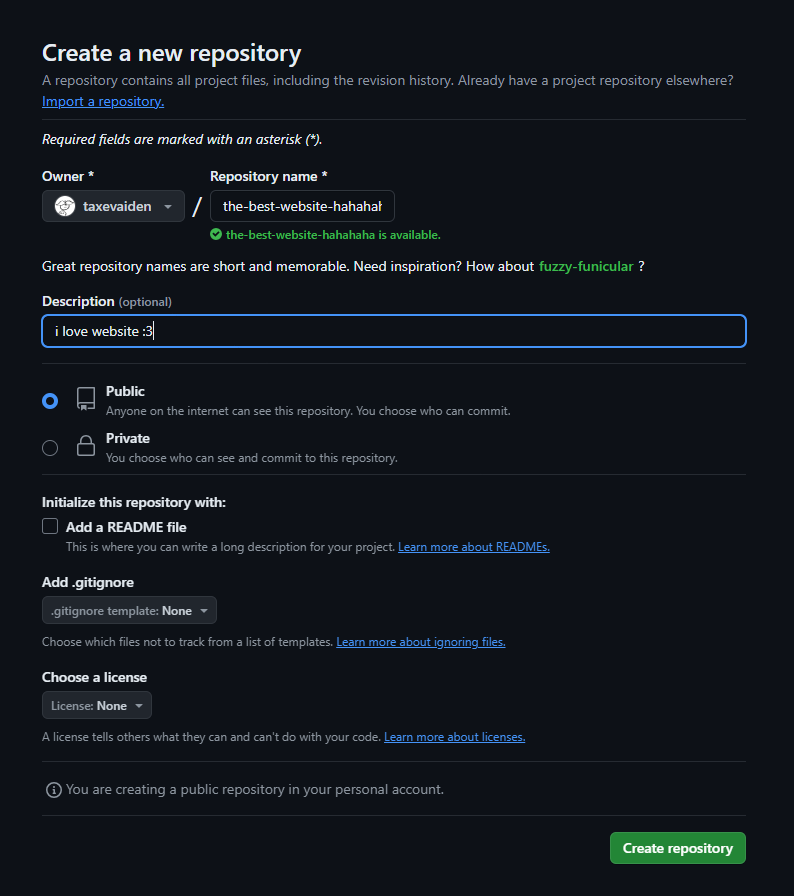
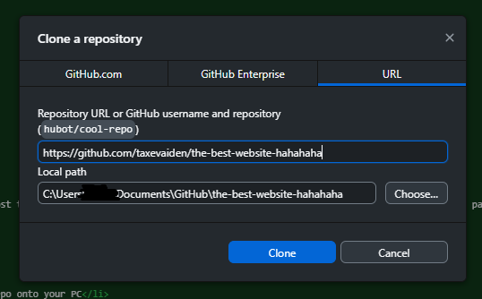
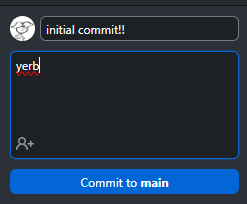
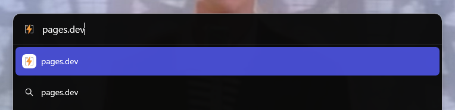
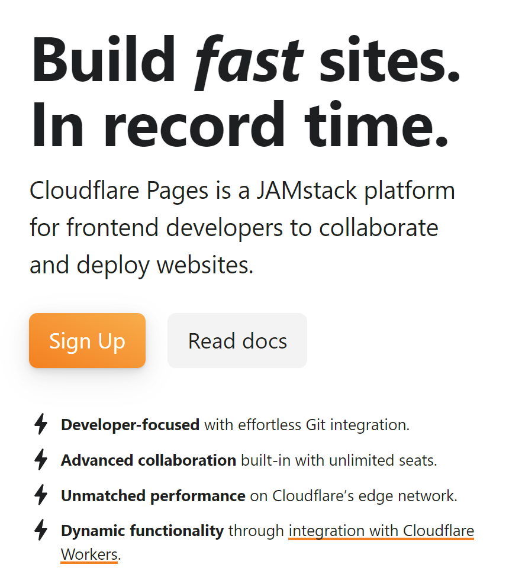
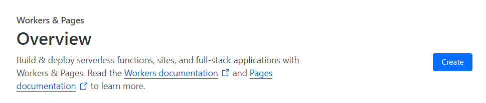
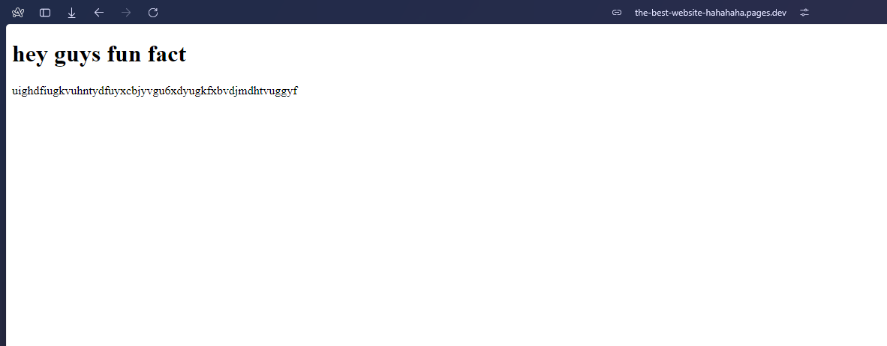

6/23/2024
since i said i used pages.dev to host this website on my last post, i figured i would make a guide on how to actually use pages.dev.
it's actually very simple
all you have to do is;
i'll walk you through :3
making a repo is easy. just make an account first.
once you have an account, you should (probably) be on the dashboard.
when you're on the dashboard, you can go ahead and make a new repo.
click the "new" button, and you'll be redirected to this page.
name the repo whatever you want, do all the settings blah blah blah
once you're done, now you can click "create repository"
after creating your repo, you will be greeted by this page. you are now at the repo page.
click "set up in github desktop".
github desktop should open up.
you can go ahead and set the local path to something else, but i just have it as the default.
write this "local path" down somewhere, you will need it later.
click "clone" and now you'll be in your github repo.
now, you can open up your favorite code editor (i use vscode) and open your local github repo
this is pretty much just a folder.
now, go to town making your website!! use pure html, css, and js, or whatever you want!
and after you're done making the website, you can commit your changes. this is as easy as clicking a button.
then publish the branch.. and now your local github repo is now on the github repo (that's available to the whole world)
so now, your repo is there, but now what?
now it's time for some pages.dev!!
go to your browser and type in pages.dev. it should redirect you to cloudflare pages.
yes i use the Arc browser it's actually really good
once you're on the website, click sign up, and do your signing up stuff like normal.
and now you are on the dashboard.
you could do a lot of stuff, including buying a domain
but i won't do that step (i'm broke af)
what we will be focusing on is the "workers & pages" tab.
go to the sidebar, and click on "workers & pages".
now that you're in the "workers & pages" tab, you can click "create".
you'll now see "create an application" by default we are on the "workers: tab.
but nobody wants that, so we have to switch to the "pages" tab.
there should be a "connect to git" button. click that, and if prompted to login to github, do so.
select your repository with your amazing website on it, and begin the setup!
for me, i used pure html, css, and js, so i didn't use a static site generator.
if you did use one, you have to fill in the build settings.
after that's done, click "save and deploy"!!
now, it's building and deplying your site. this might take a while if your website is massive.
it'll give you a domain, and when you visit it, you beautiful website will be there. (you'll have to wait a while for it to show up.)
there are easier ways (such as using neocities) but this is the way i used to make this website.
this post is pretty long so i'll edit and fix some issues i find in this post.